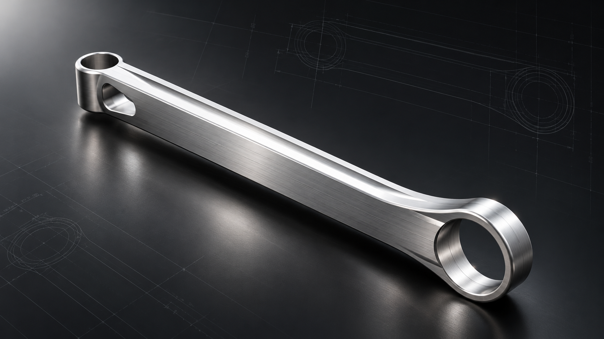
Mechanical Design & Simulation · Part 1 Complete
Suspension Control Arm
Four CAD iterations of a front lower control arm for a 2007 Mercedes-Benz S550, combining topology-guided redesign and finite element analysis. V4 was selected for improved simulated performance at the same mass as the original design.
Project Overview
I started this project to move from understanding how automotive suspension works to designing and evaluating a component myself. The focus is a lower control arm link for a Mercedes-Benz S550, connecting the chassis bushing to the wheel-side ball joint.
The project follows an iterative workflow: research the suspension and material options, build a CAD model, examine its response to an applied load, and revise the geometry around the areas that need attention. Part 1 is now complete: V1–V4 have been compared for mass, stress, displacement, factor of safety, fatigue life, and first natural frequency. Part 2 will evaluate how the selected design could be manufactured.
Design Iterations
V1: Establishing a baseline
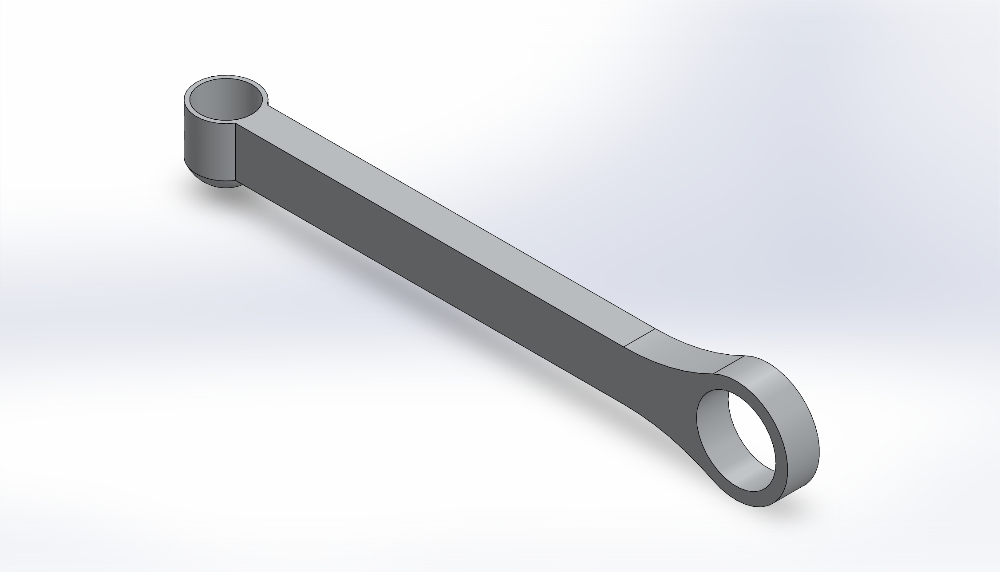
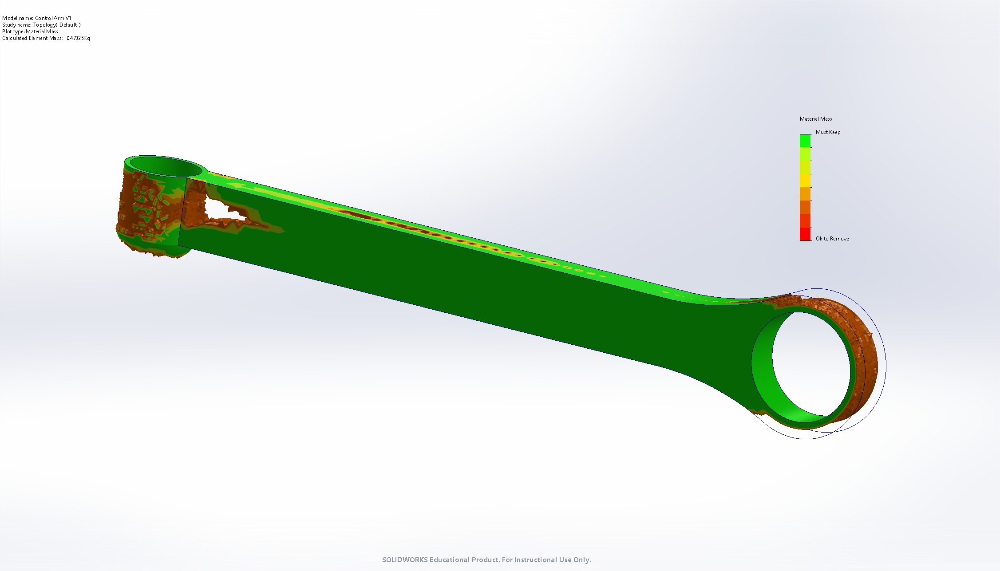
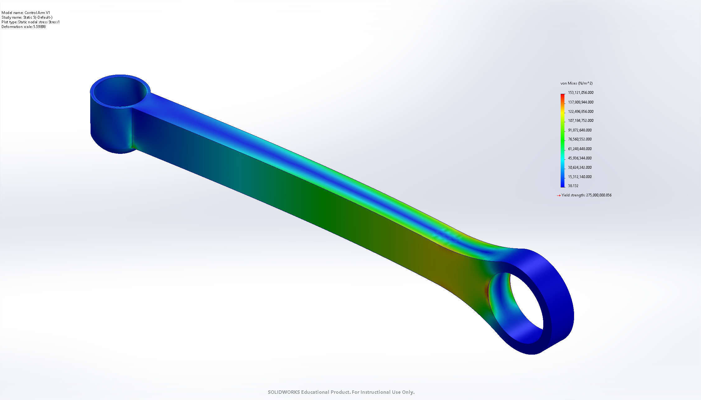
The initial model established the general shape and mounting features. In the first static study, I fixed the bushing mounting location and applied a perpendicular load at the ball-joint location. The results highlighted stress near the bushing support and prompted further research into realistic loading, bending, and reinforcement.
V2: Refining the load path
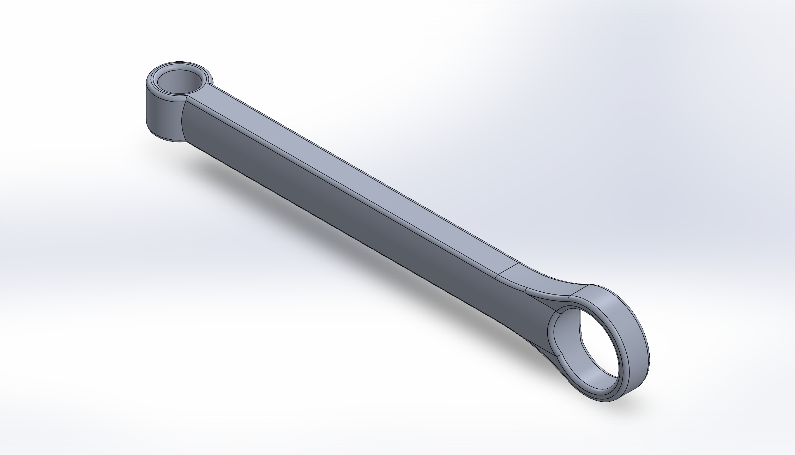
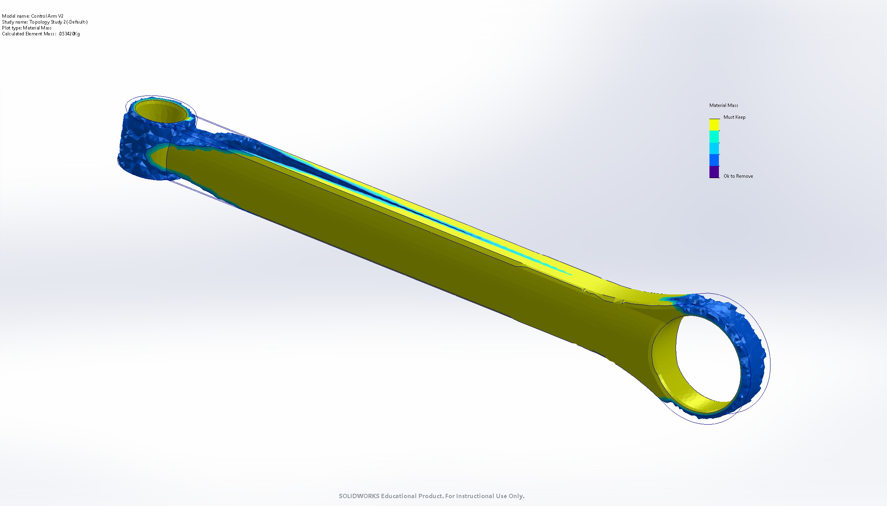
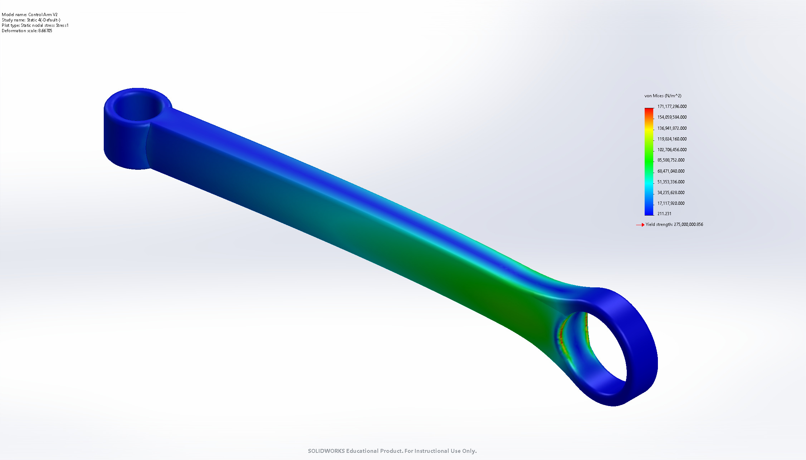
- Increased section width: changed the documented width from 0.8 to 1.0 inch, adding material in areas identified for reinforcement.
- Added fillets: rounded sharp transitions to encourage smoother stress distribution.
- Revised the ball-joint region: increased the surrounding wall thickness, refined the bore diameter, and replaced the blind-hole arrangement with a through-hole.
- Removed underside material: explored a more efficient mounting geometry while retaining support around the connection.
V3: Topology-guided weight reduction
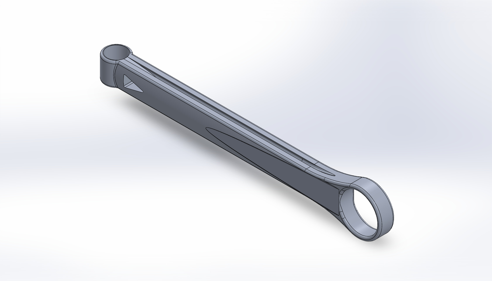
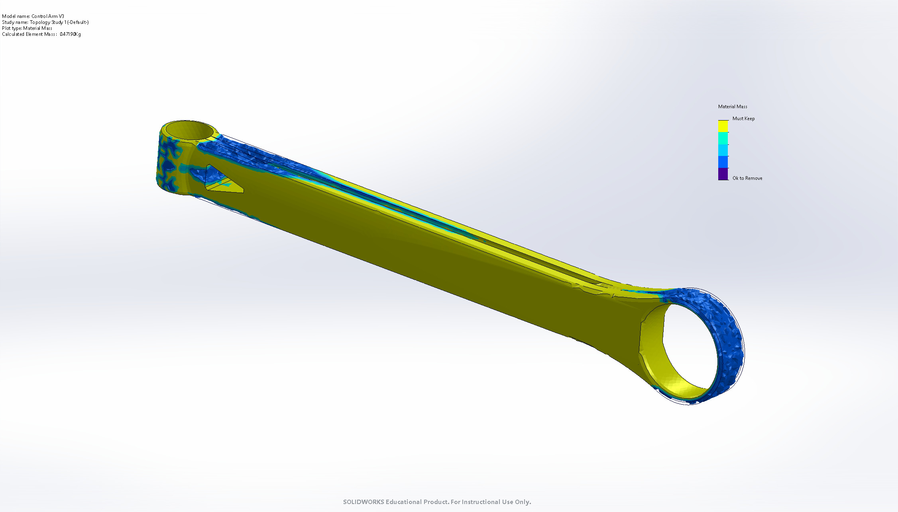
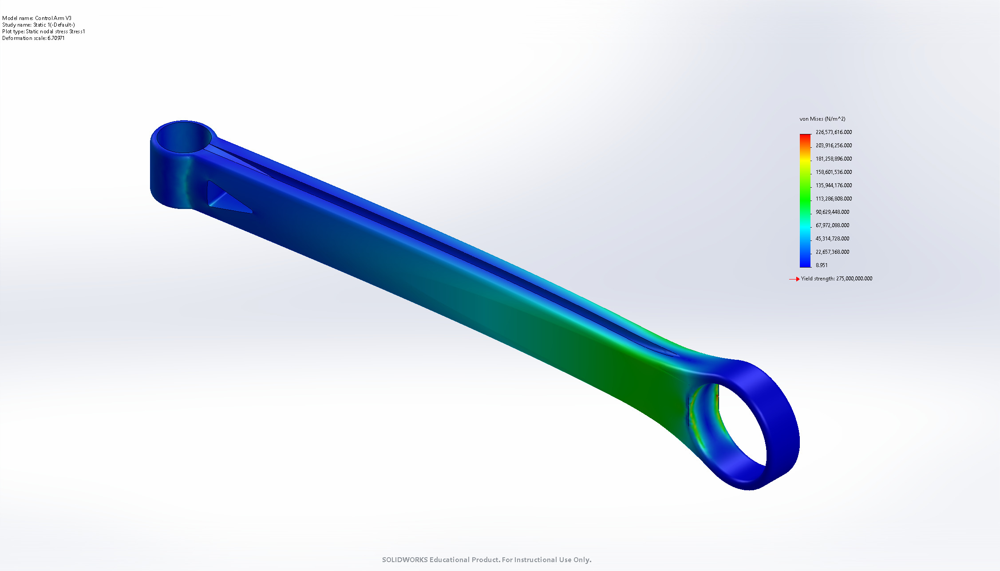
I introduced double-sided recesses along the central length to create an I-beam-like section, retaining outer material to resist bending. I also reduced the ball-joint housing diameter from 2.6 to 2.4 inches and a surrounding mounting feature from 1.50 to 1.25 inches.
Mass decreased from 1.60 lb to 1.36 lb. An early local probe comparison showed increased stress after material removal, highlighting the trade-off between weight savings and reinforcement.
V4: Restoring reinforcement where it matters
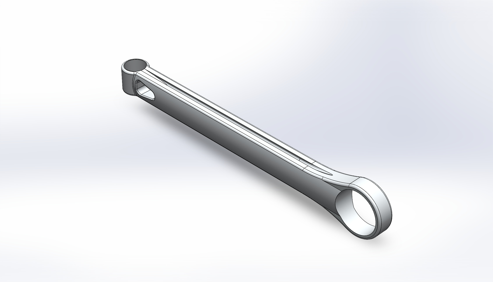
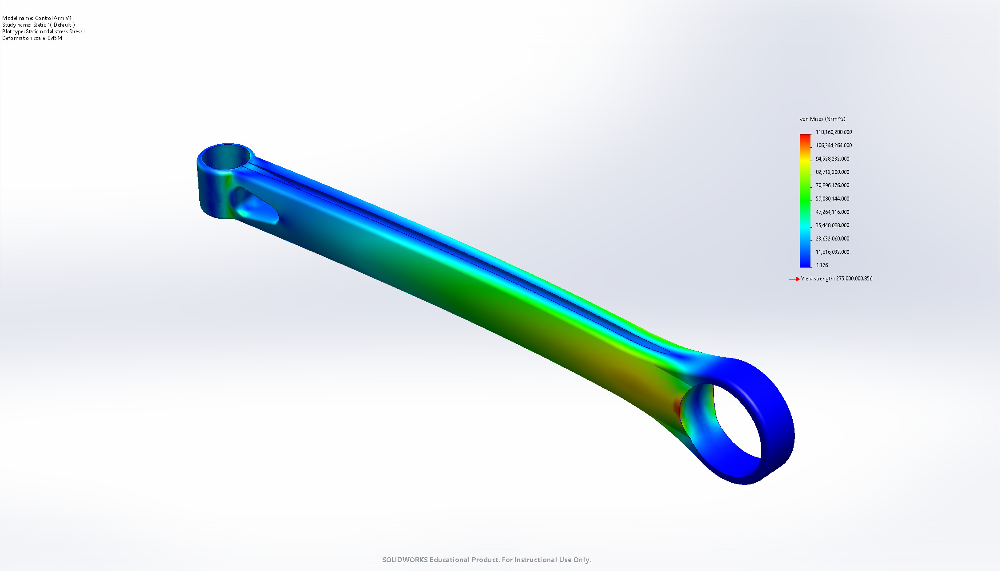
I restored material near the chassis-bushing transition while retaining selected weight-saving features from V3. I also investigated a bushing-hole fillet that produced unusually high stresses at the fixed-fixture boundary.
V4 finished at 1.41 lb, matching V1. It was selected as the preferred design because it improved the reported stress, displacement, fatigue-life, and frequency results without increasing baseline mass.
Simulation Results
The final comparison, documented October 28, supersedes the earlier V1/V2 screening studies. All values below are reported simulation outputs from the project journal.
| Measure | V1 | V2 | V3 | V4 · Selected |
|---|---|---|---|---|
| Mass (lb) | 1.41 | 1.60 | 1.36 | 1.41 |
| Representative bushing-region von Mises stress (MPa) | 117 | 94.3* | 113.4* | 96.85 |
| Maximum displacement (mm) | 6.941 | 4.448 | 5.754 | 4.567 |
| Reported minimum factor of safety | 1.796 | 2.900 | 2.412 | 2.629 |
| Predicted minimum fatigue life (cycles) | 993,505 | Infinite** | 6,300,000 | 15,116,000 |
| First natural frequency (Hz) | 165.25 | 189.42 | 184.39 | 219.83 |
* The journal flags singularities in V2 and V3. Stress values describe the selected bushing region, rather than unrestricted global peak stress. ** “Infinite” is the reported fatigue solver result under the modeled assumptions, not a claim of unlimited physical life.
Why V4 was selected
V4 reduced representative stress from 117 to 96.85 MPa and displacement from 6.941 to 4.567 mm at the same 1.41 lb mass as V1. Its first natural frequency increased by 33.0%, and predicted minimum fatigue life increased to approximately 15.1 million cycles.
V2 retained slightly lower displacement and a higher reported factor of safety, but weighed 1.60 lb. V4 was 11.9% lighter than V2 with similar simulated static stiffness, giving the preferred balance of performance and material efficiency.
Investigating the fixture-boundary stress spike
During the fillet investigation, successive mesh refinements increased peak stress from approximately 288 to 588 to 639 MPa. The narrow concentration near the fixed bushing fixture suggested a possible stress singularity rather than a converged peak. Removing the fillet eliminated the extreme spike in that study.
I therefore considered representative stresses away from the suspected singularity when interpreting the designs. A realistic flexible-bushing model and further mesh-convergence work remain important verification steps.
Scope of completion: Part 1 covers CAD development and comparative simulation. Results remain conditional on the modeled loads, materials, fixtures, and fatigue settings. Manufacturing feasibility and physical validation are not yet established.
Design & Development Log
A condensed record of the research and decisions behind the current design.
- June 20–29, 2026
Research the system
Studied control arms, bushings, ball joints, and different suspension layouts. Researched iron, steel, and manufacturing processes to build a foundation for material selection.
- July 15–17, 2026
Build and test the first model
Created the baseline geometry and ran an initial static FEA study. Identified stress near the bushing and recognized the need for more representative loads and smoother geometry.
- July 22–31, 2026
Connect the results to mechanics
Studied bending, torsion, deflection, and material failure modes. Compared ribs, curved sections, hollow designs, and box sections as ways to improve stiffness and load distribution.
- October 3–7, 2026
Develop simulation skills
Used a simple block model to explore SolidWorks study types and learn how to interpret results before returning to the control arm.
- October 14–18, 2026
Evaluate the redesign
Documented V2 geometry changes, compared local probe values, and investigated the influence of ball-joint wall thickness and hole geometry on the latest stress results.
- October 23–28, 2026
Complete the four-version evaluation
Developed the recessed V3 geometry, restored targeted reinforcement in V4, investigated mesh-sensitive fixture stresses, and compared static, fatigue, and frequency results. Selected V4 and completed Part 1.
Part 2: Manufacturing
With the modeling and simulation phase complete, the next phase is to determine how the design could be made and whether that approach is practical and cost-effective. The items below are planned work, not completed manufacturing results.
Part 1 · Complete
3D Modeling & Analysis
Suspension research, CAD development, load calculations, simulation, design iteration, and final V1–V4 comparison.
Part 2 · Planned
Manufacturing Feasibility
Process planning, material selection, labor and cost estimates, tolerances, and inspection.
- Manufacturing route: investigate how control arms are made and select a suitable production approach for this geometry.
- Material selection: compare candidate materials and assess whether an alternative offers a better balance of performance, manufacturability, and cost.
- Operations planning: identify required milling, drilling, and deburring steps and their labor requirements.
- Tolerances: define dimensional requirements for the bushing, ball-joint mounting features, and relevant interfaces.
- Inspection: plan how critical dimensions and manufacturing quality would be checked.
- Cost feasibility: estimate material, processing, and labor costs and evaluate economic viability before committing to a manufacturing plan.
Project Gallery
Explore each version in order, from the original geometry through the final selected design. Each labeled image is also placed beside its corresponding design discussion above.